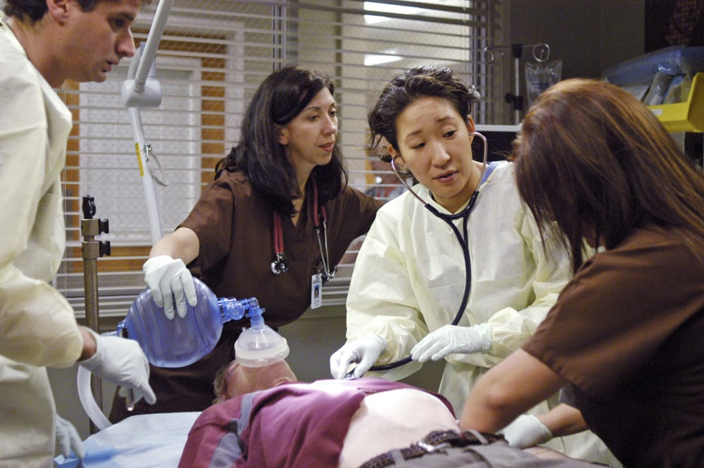

Investigating perceptual dimensions of social speaker characteristics in TTS voices
Sai Sirisha Rallabandi and Sebastian Möller
Quality and Usability Lab
Technical University Berlin
Abstract:
We analyze the social speaker characteristics of Text-to-Speech (TTS) voices with respect to the application domains health care and customer service. It is essential that these voices exhibit certain domain-specific psychological speaker characteristics such as warmth and competence in the generated speech. However, a systematic strategy for the perception of these characteristics from synthetic voices is unknown. Therefore, we perform a 3-stage evaluation of TTS systems in order to reach the perceptual aspects contributing to the targeted characteristics. A discussion on the findings of each evaluation stage, i) pre-tests conducted for speaker selection, ii) questionnaire preparation and iii) Exploratory Factor Analysis (EFA), comparison of our results with that of the natural speech is presented. Through this work, we further propose the perceptual dimensions to be evaluated for each of warmth and competence in TTS voices. Our analysis shows that additionally, we have also obtained the dimensions underlying the personality trait, Extraversion in the current study.

Speech Samples used for subjective evaluations are presented below.
TTS System
Male voice for health care
Female voice for health care
Male voice for customer service
Female voice for customer service
Neural TTS
Clustergen
USS
HTS
Acknowledgements
This work is being supported by the German Research Foundation (DFG), under funding MO 1038/29-1, TU PSP-Element: 1-50001062-01-EF. Authors would like to thank all the participants of the subjective tests. Also, thanks to Benjamin Weiss for his valuable time and feedback.